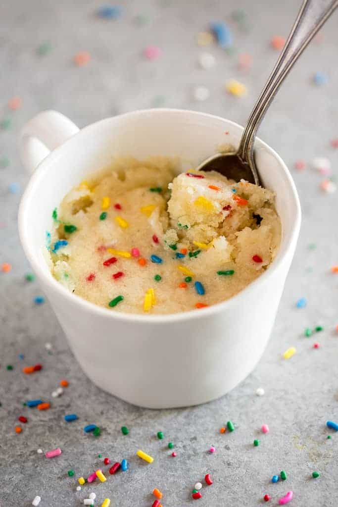

Mug Cake

Awesome mug cake recipe
Super easy to make and tasty and yum
Ingredients
- All-Purpose Flour
- White Sugar
- Baking Powder
- Dash Salt
- Butter
- Milk (any kind)
- Vanilla
Instructions:
-
Add the dry ingredients to a microwave safe mug; flour, sugar, baking powder, and salt.
-
Stir in the wet ingredients: milk, melted butter, and vanilla.
-
Microwave for 70-90 seconds.